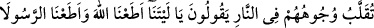

KIYÂMETİN ZAMANI
ALLAH KATINDADIR
63. İnsanlar sana kıyametin zamanını soruyorlar. De ki: Onun bilgisi Allah
katındadır. Ne bilirsin, belki de zamanı yakındır.
64. Şu muhakkak ki, Allah kâfirleri rahmetinden kovmuş ve onlara çılgın bir ateş
hazırlamıştır.
65. (Onlar) orada ebedî olarak kalacaklar, (kendilerini koruyacak) ne bir dost ne
de bir yardımcı bulacaklardır.
66. Yüzleri ateşte evrilip çevrildiği gün: Eyvah bize! Keşke Allâh’a itâat
etseydik, Peygamber’e de itâat etseydik! derler.
67. Ey Rabbimiz! Biz reislerimize ve büyüklerimize uyduk da onlar bizi yoldan
saptırdılar, derler.
68. Rabbimiz! Onlara iki kat azap ver ve onları büyük bir lânetle rahmetinden
kov.
“İnsanlar sana kıyametin” kopma “zamanını soruyorlar.”
Saat, zamanın cüzlerinden bir cüzdür. “O, hesap görenlerin en çabuğudur.”(el-
En’am, 6/62) âyetinde geçtiği gibi kıyâmetin hesabı çok süratli olduğu için “saat”e
benzetilerek kıyâmet “saat” diye ifâde edilir.
Müşrikler alay etmek, sıkıntıya sokmak ve inkâr etmek amacıyla; Allah Teâlâ
Tevrât’ta ve diğer kitaplarda vaktini belli etmediği için yahudiler imtihan etmek için
acele gelmesini isteyerek Hz. Peygamber (s.a.)’e kıyametin zamanını soruyorlardı.
“De ki: Onun bilgisi Allah katındadır.” Hiçbir mukarreb meleği ve gönderilmiş
peygamberi kıyametin vaktine muttali kılmaz.
Şöyle anlatılır: Halîfelerden birisi rüyâsında ölüm meleğini gördü. “Ömrüm ne kadar
kaldı?” diye sordu. O da beş parmağı işâret etti. Bu rüyânın tâbirini çok kimseden